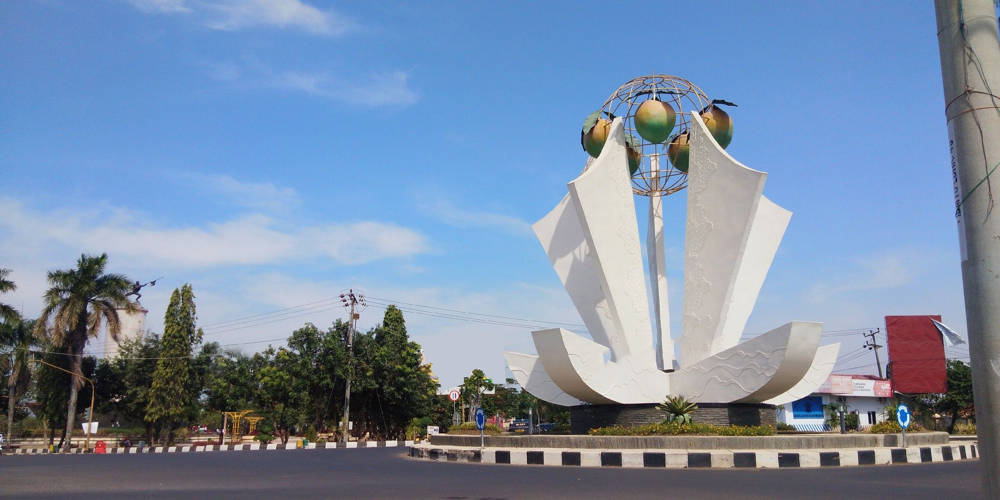
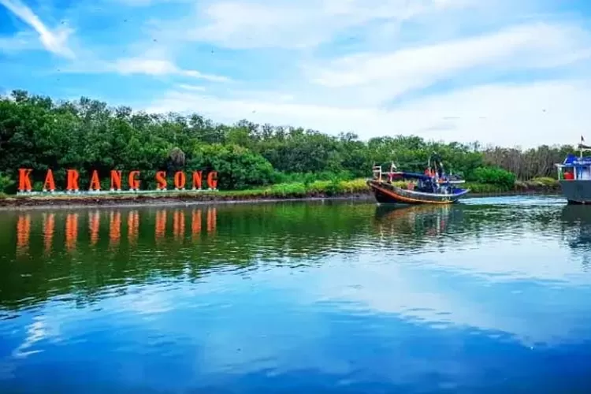

Sejarah Kabupaten Indramayu

Bunderan mangga
Raden Bagus Arya Wiralodra merupakan sosok utama dalam sejarah
berdirinya Indramayu. Di tahun 1527 gelar Wiralodra I disandang Arya
Wiralodra sebagai pemimpin Padukuhan Cimanuk atau Darma Ayu Nagari
(Bupati Indramayu). Secara geografis, Kabupaten Indramayu berada
pada 107"51'-108"36' Bujur Timur dan 6"15'- 6"40' Lintang Selatan.
Wilayahnya terletak di bagian utara provinsi Jawa Barat yang
berbatasan langsung dengan Laut Jawa. Kabupaten Indramayu berjarak
sekitar 52 Km barat laut Kota Cirebon, 144 Km dari Kota Bandung
melalui Sumedang serta 205 Km dari Jakarta ke arah timur. Seluruh
wilayahnya merupakan dataran rendah hingga pesisir. Ada sebagian
daerah yang memiliki perbukitan terutama di perbatasan Kabupaten
Sumedang yaitu Dusun Ciwado Desa Cikawung, Kecamatan Terisi,
Indramayu. Dan sebagian wilayah Sanca, Kecamatan Gantaruas.
pemerintah Kabupaten Indramayu saat ini terdiri dari 31 Kecamatan,
309 desa dan 8 kelurahan.
Wisata Indramayu

pantai karangsong
Objek wisata paling populer di Kabupaten Indramayu. Dan Pantai masih
menjadi destinasi wisata terfavorit bagi masyarakat Indramayu saat
hari libur, dan masih jadi tujuan wisatawan baik lokal maupun luar
Kabupaten Indramayu.
Pantai Karangsong
Pantai Karangsong yang berada di Kecamatan Indramayu ini, masih
menjadi daya tarik tersendiri bagi wisatawan. Wisatawan akan
disuguhkan dengan pemandangan hamparan laut yang luas. Wisatawan
juga bisa melihat secara langsung deretan Kapal nelayan yang
bersandar dengan pemandangan hutan mangrove yang hijau. Untuk biaya
masuk wisata Karangsong sebesar Rp.10.000 perorang.
Pantai Tiris
Pantai Tiris yang berada di pesisir pantai di Kecamatan Pasekan
Indramayu menjadi destinasi wisata pantai tersembunyi yang memukau
dan alami, tempat ini ramai sekali dikunjungi muda mudi Indramayu.
Harga tiket untuk masuk di kawasan ini sebesar Rp.5.000. 9. Pantai
Plentong Pantai Plentong Ujunggebang Kecamatan Sukra Kabupaten
Indramayu dengan berbagai macam wahana airnya dan suasana laut yang
di anggap indah, setiap hari selalu ramai oleh sejumlah pengunjung
baik dalam daerah maupun luar daerah Indramayu. Untuk memasuki
kawasan tersebut pengunjung dikenakan biaya Rp.20.000 saja.
Objek wisata Situ Bolang
Objek wisata satu ini merupakan agrowisata yang berada di Desa
Jatisura, Kecamatan Cikedung, Kabupaten Indramayu, Jawa Barat. Objek
wisata ini menawarkan konsep edukasi kepad para pengunjung tentang
perkebunan. Terdapat juga taman bermain anak dan Spot foto yang
menarik. Harga tiket untuk masuk ke area ini sebesar Rp.10.0000
perorang.
Wisata Alam Ciwado
wisaya yang berlokasi di Kampung Ciwado, Desa Cikawung, Kecamatan
Terisi.Lokasi wisata alam ini terletak di tengah kawasan hutan.
Selain menawarkan eksotisme alam di sekitar, objek wisata Watu Bubut
Ciwado juga menawarkan wisata alam terbuka yang sedikit berbeda.
Pengunjung tidak dikenakan biaya masuk tapi membayar sekedarnya
saja.
Selain Terkenal dengan Berbagai keindahan dari Wisata Pantainya,
Ternyata Indramayu juga memiliki destinasi wisata religi yang bisa
kalian para wisatawan kunjungi.Biasanya dari mulai dari Makam hingga
tempat ibadah, bisa kalian temukan di Indramayu. berikut kami
berhasil merangkum berbagai tempat wisata religi Indramayu yang bisa
kalian kunjungi. Diantaranya:
- Situs Makam Raden Aria Wiralodra
- Masjid Islamic Center Indramayu
- Masjid Bondan Kuno
- Makam Habib Keling
- Taman Wisata Banjar Jatibarang